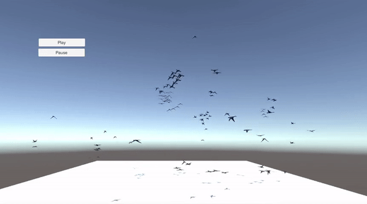

<!DOCTYPE HTML>
<html>
<head>
    <meta charset="utf-8">
    <meta http-equiv="X-UA-Compatible" content="IE=edge">
    <title>Sonia Camacho - Portfolio</title>
    <meta name="viewport" content="width=device-width, initial-scale=1">
    <meta name="description" content="Sonia Camacho Portfolio" />
    <meta name="keywords" content="portfolio, interactive media technology, engineer, telecommunication engineer, audiovisual system engineer" />
    <meta name="author" content="Sonia Camacho" />

    <!-- Facebook and Twitter integration -->
    <meta property="og:title" content="" />
    <meta property="og:image" content="" />
    <meta property="og:url" content="" />
    <meta property="og:site_name" content="" />
    <meta property="og:description" content="" />
    <meta name="twitter:title" content="" />
    <meta name="twitter:image" content="" />
    <meta name="twitter:url" content="" />
    <meta name="twitter:card" content="" />

    <!-- <link href="https://fonts.googleapis.com/css?family=Montserrat:400,700" rel="stylesheet"> -->
    <!-- <link href="https://fonts.googleapis.com/css?family=Playfair+Display:400,400i" rel="stylesheet"> -->
    <link rel="stylesheet" href="https://cdnjs.cloudflare.com/ajax/libs/font-awesome/4.7.0/css/font-awesome.min.css">

    <!-- Animate.css -->
    <link rel="stylesheet" href="../css/animate.css">
    <!-- Icomoon Icon Fonts-->
    <link rel="stylesheet" href="../css/icomoon.css">
    <!-- Bootstrap  -->
    <link rel="stylesheet" href="../css/bootstrap.css">

    <!-- Theme style  -->
    <link rel="stylesheet" href="../css/style.css">

    <!-- Modernizr JS -->
    <script src="../js/modernizr-2.6.2.min.js"></script>
    <!-- FOR IE9 below -->
    <!--[if lt IE 9]>
    <script src="js/respond.min.js"></script>
    <![endif]-->

</head>
<body>

    <div class="fh5co-loader"></div>

    <div id="page">
        <nav class="fh5co-nav" role="navigation">
            <div class="container">
                <div class="fh5co-top-logo">
                    <div id="fh5co-logo"><a href="../index.html">Sonia Camacho</a></div>
                </div>
                <div class="fh5co-top-menu menu-1 text-center">
                    <ul>
                        <li><a href="../index.html">Portfolio</a></li>
                        <li><a href="../about.html">About me</a></li>
                    </ul>
                </div>
                <div class="fh5co-top-social menu-1 text-right">
                    <ul class="fh5co-social">
                        <li><a href="mailto:s.camacho.her@gmail.com"><i class="fa fa-envelope-o"></i></a></li>
                        <li><a href="https://www.instagram.com/soniacamac/"><i class="fa fa-instagram"></i></a></li>
                        <li><a href="https://github.com/sonia-ch"><i class="fa fa-github"></i></a></li>
                        <li><a href="https://vimeo.com/soniac"><i class="fa fa-vimeo"></i></a></li>
                    </ul>
                </div>
            </div>
        </nav>

        <div id="fh5co-author">
            <div class="container">
                <div class="row top-line animate-box">
                    <div class="col-md-6 col-md-offset-3 text-left fh5co-heading">
                        <h2>Simulation of a flock of birds</h2>
                        <p>The goal of this work is to create an animation of a flock of birds that behaves according
                            to Reynolds' boids model. Additional rules are considered to grant obstacle avoidance to
                            the flock and boundary constraints to avoid the spreading of the flock out of the field.</p>

                        <!-- <div class="role">
                            <h3>Role</h3>
                            <ul>
                                <li>Front-end Design</li>
                                <li></li>
                                <li></li>
                                <li></li>
                            </ul>
                        </div> -->
                        <p><a href="https://sonia-ch.github.io/BoidsWebGL/index.html" class="btn btn-primary">Play simulation in WebGL</a></p>
                    </div>
                </div>
                <div class="row">
                    <div class="col-md-8 col-md-offset-2">


                        <p class="animate-box work-description">
                            <h2>Modelling and animating the birds</h2>

                            In order to create the 3D model and the flying animation of the birds, the open source
                            software Blender was used. A simple armature was added to the model, with a main
                            bone in the body and two bones for the right and left wings. The model was imported into
                            Unity to be used as the prefab for the autonomous agents. Only the 
                            flying animation was designed, which involved that the birds will not stop at the ground at any moment. This
                            additional state could be implemented as future work.
                        </p>

                        <p class="animate-box"></p>
                        <p class="animate-box"></p>
                        <p class="animate-box"></p>
                        <p class="animate-box"></p>
                        <p class="animate-box"></p>

                        <p class="animate-box work-description">
                            <h2>Implementing boids algorithm in 2D</h2>

                            The implementation of the boids simulation algorithm started with a simplified approach
                            in 2D. The main reason for this was the ease to visualize and assure a correct behavior of
                            the boids. A simple scene was created in Unity, with a flat plane as the floor and the boids
                            moving exclusively in a plane parallel to it.

                            The boids are instantiated in a uniform distribution around the field and they always
                            remain inside the boundary limits of the field. In order to fulfill this requirement, a new
                            component is added to the boids' velocity, forcing a
                            change of direction towards the center of the field when they pass the boundaries.
                        </p>

                        <p class="animate-box"></p>
                        <p class="animate-box"></p>

                        <p class="animate-box work-description">
                            <h2>Simulation in 3D</h2>
                            So far, the implementation had been constrained to 2D. That means that the birds could
                            only fly horizontally and all of them at the same height. The next step in the development
                            process was to add a new degree of freedom by allowing the birds to 
                            fly freely in the three-dimensional space.
                        </p>

                        <p class="animate-box"></p>
                        <p class="animate-box"></p>

                        <p class="animate-box work-description">
                            <h2>Generating the terrain in Unity</h2>
                            To add an extra level of realism to the scene, a new terrain was created
                            replacing the previous 
                            flat ground. This forced the implementation of an additional interaction between the boids and 
                            the environment in order to avoid collisions. The landscape,
                            formed by an irregular ground and high mountains, was modelled using Unity's Terrain
                            Engine.
                        </p>

                        <p class="animate-box"></p>
                        <p class="animate-box"></p>

                        <p class="animate-box work-description">
                            <h2>Avoiding obstacles</h2>
                            
                            The boids control if there are any near obstacles
                            in their movement direction. If an obstacle is detected, the boids need to change their direction
                            to avoid it before colliding. A new behavioral component is added to the velocity
                            of the boids (besides the cohesion, separation, etc.). This new component is equal to the
                            reflection of the boid's current direction (its forward axis) from the surface of the hit obstacle.
                        </p>

                        <p class="animate-box"></p>
                        <p class="animate-box"></p>
                        
                        <p class="animate-box work-description">
                            <h2>Real-time parameter tuning</h2>
                            
                            In order to be able to manipulate the behavior parameters in real time, a control panel was
                            added to the application as a GUI element. The options include Play/Pause, number of birds, neighborhood
                            distance, separation distance and set default parameters. The values are selected via sliders
                            and a callback function is in charge of updating the parameters in the simulation in real
                            time.
                        </p>

                        <p class="animate-box"></p>

                        <p><a href="https://sonia-ch.github.io/BoidsWebGL/index.html" class="btn btn-primary">Play simulation in WebGL</a></p>


                        <!-- %%%%%%%%%%%%%%%%%%%%%%%%%%%%%%%%%%%%%%%%%%%%%%%%%%%%%%%%%%%%%%%%%%%%%%%%%%%%%%%%%%%%%%%%%%%%%% -->
                        <div class="row row-pt-md portfolio-navigation">
                            <div class="col-xs-4 text-left">
                                <a href="#" class="btn btn-primary btn-outline"><i class="icon-chevron-left"></i> Prev </a>
                            </div>
                            <div class="col-xs-4 text-center">
                                <a href="../index.html" class="btn btn-primary btn-outline"><i class="icon-grid2"></i> View All</a>
                            </div>
                            <div class="col-xs-4 text-right">
                                <a href="#" class="btn btn-primary btn-outline">Next <i class="icon-chevron-right"></i></a>
                            </div>
                        </div>
                    </div>
                </div>
            </div>
        </div>
        <!-- <div id="fh5co-started">
            <div class="container">
                <div class="row animate-box">
                    <div class="col-md-8 col-md-offset-2 text-center fh5co-heading">
                        <h2>Get Started</h2>
                        <p>We create beautiful themes for your site behind the word mountains, far from the countries Vokalia and Consonantia, there live the blind texts.</p>
                        <p><a href="#" class="btn btn-primary">Let's work together</a></p>
                    </div>
                </div>
            </div>
        </div> -->
        <footer id="fh5co-footer" role="contentinfo">
            <div class="container">
                <div class="row copyright">
                    <div class="col-md-6 text-left">
                        <p>
                            <small class="block">&copy; Sonia Camacho</small>
                        </p>
                    </div>
                    <div class="col-md-6 text-right">
                        <ul class="fh5co-social-icons">
                            <li><a href="mailto:s.camacho.her@gmail.com"><i class="fa fa-envelope-o"></i></a></li>
                            <li><a href="https://www.instagram.com/soniacamac/"><i class="fa fa-instagram"></i></a></li>
                            <li><a href="https://github.com/sonia-ch"><i class="fa fa-github"></i></a></li>
                            <li><a href="https://vimeo.com/soniac"><i class="fa fa-vimeo"></i></a></li>
                        </ul>
                    </div>
                </div>

            </div>
        </footer>
    </div>

    <div class="gototop js-top">
        <a href="#" class="js-gotop"><i class="icon-arrow-up"></i></a>
    </div>

    <!-- jQuery -->
    <script src="../js/jquery.min.js"></script>
    <!-- jQuery Easing -->
    <script src="../js/jquery.easing.1.3.js"></script>
    <!-- Bootstrap -->
    <script src="../js/bootstrap.min.js"></script>
    <!-- Waypoints -->
    <script src="../js/jquery.waypoints.min.js"></script>
    <!-- Main -->
    <script src="../js/main.js"></script>

</body>
</html>

